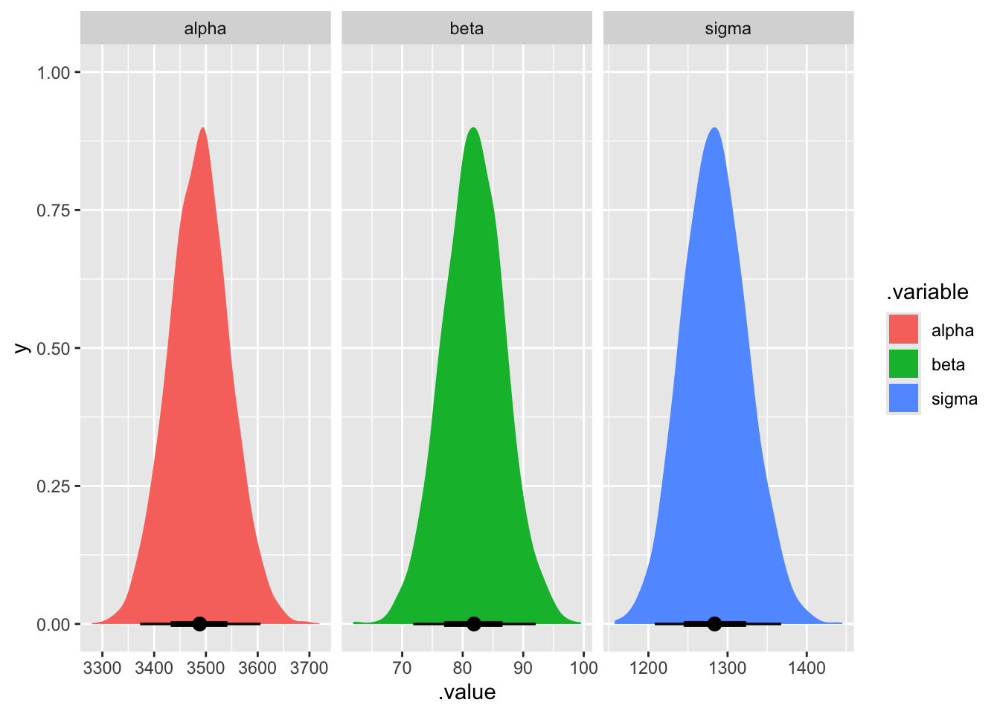
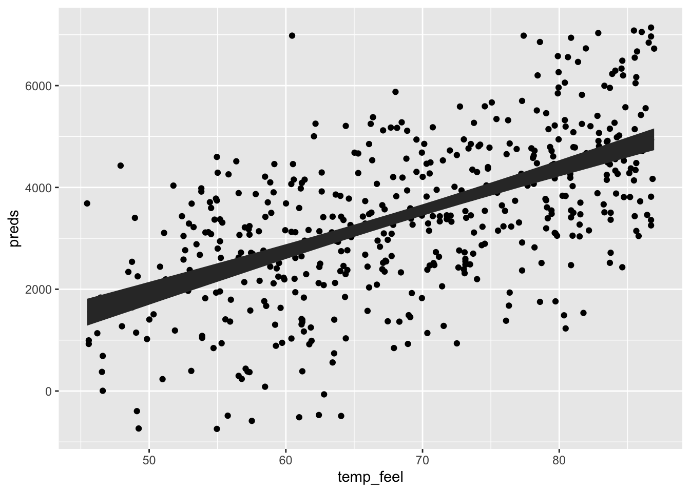
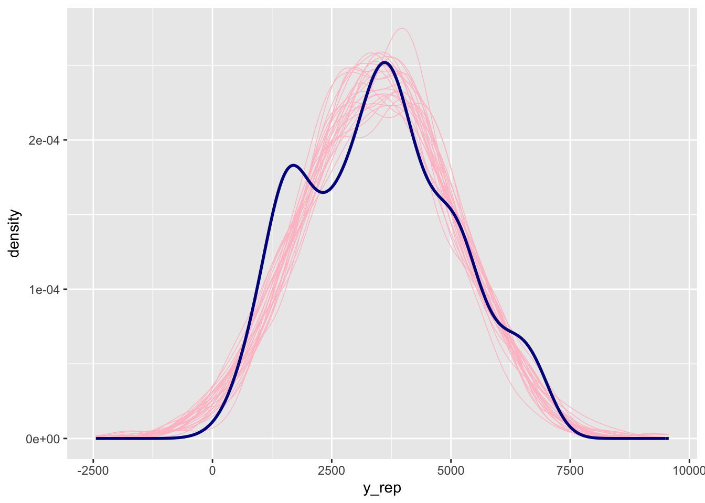
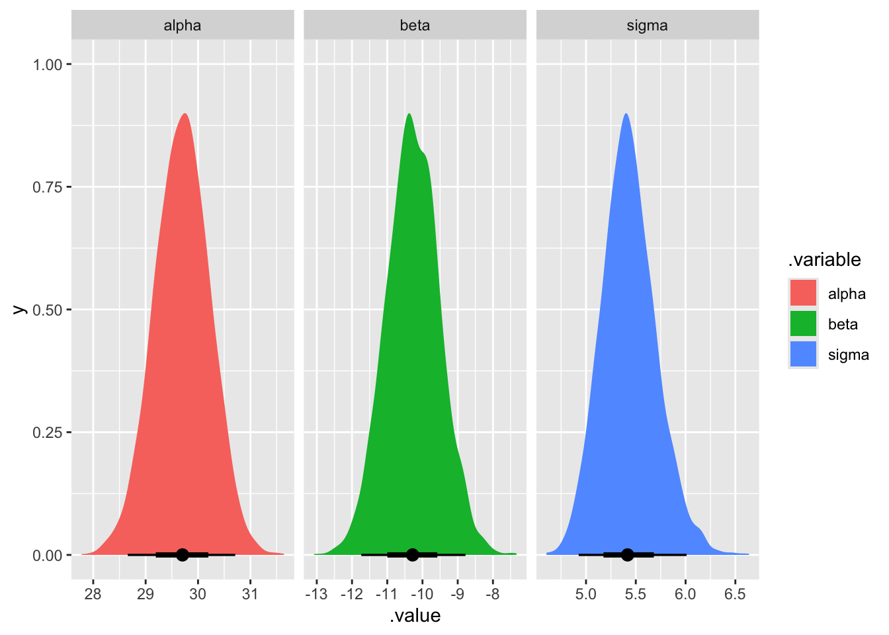
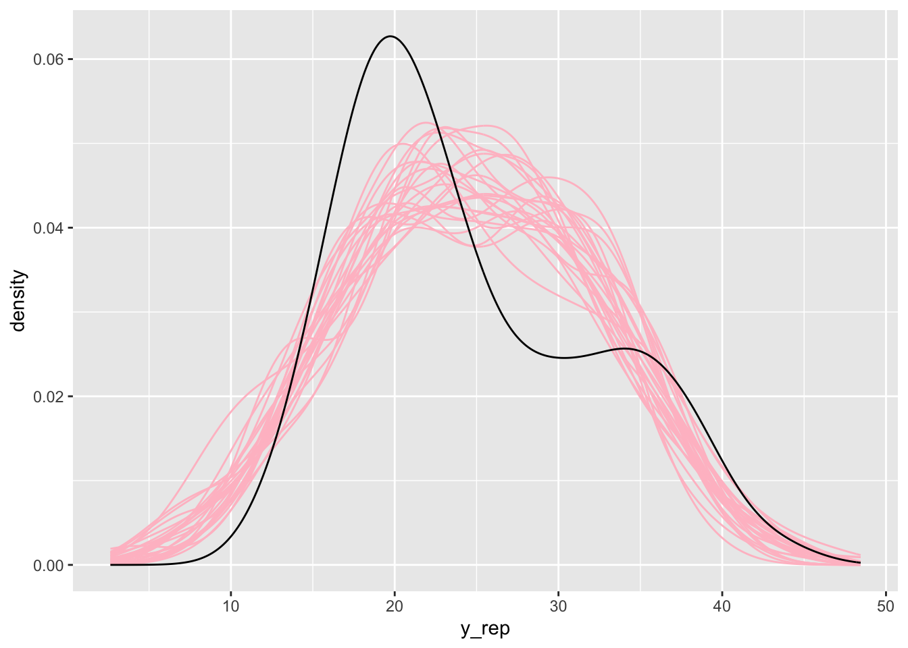
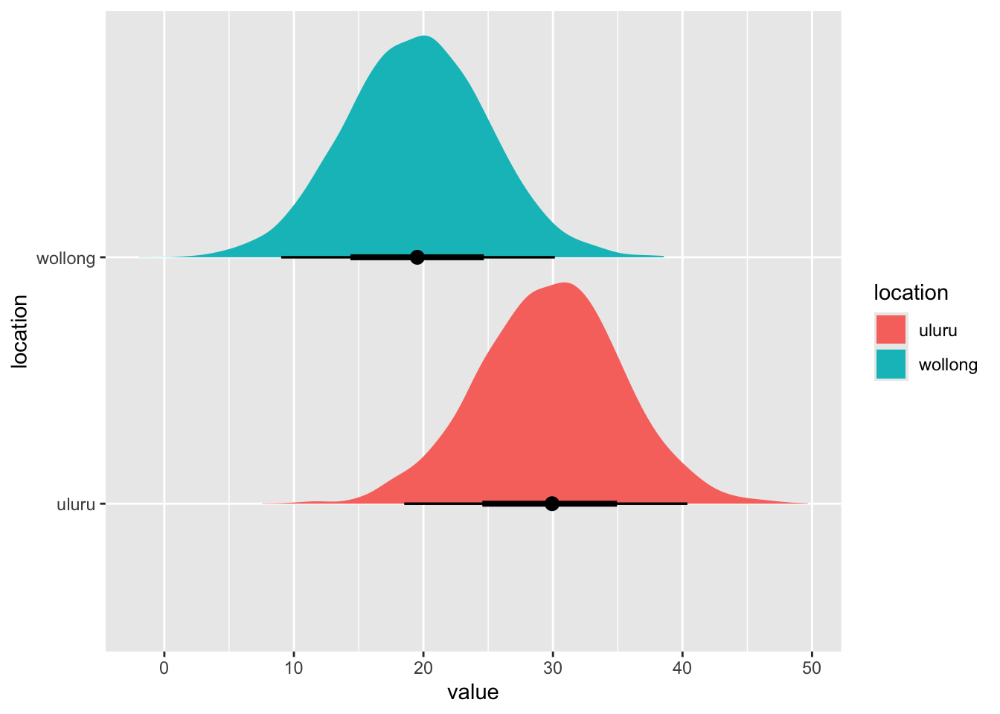
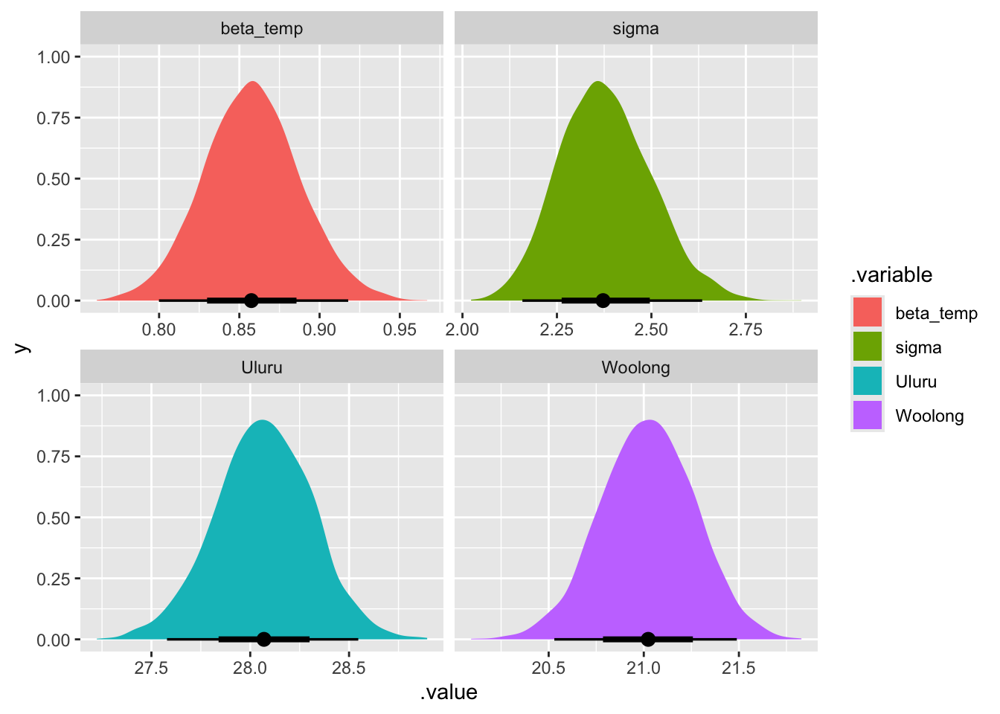
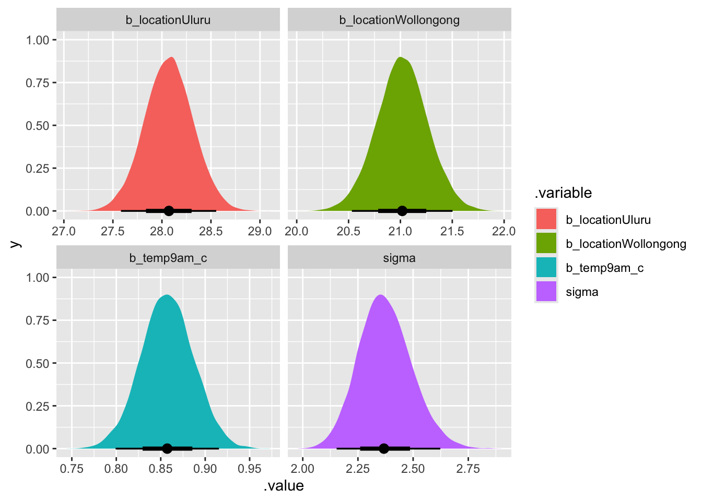
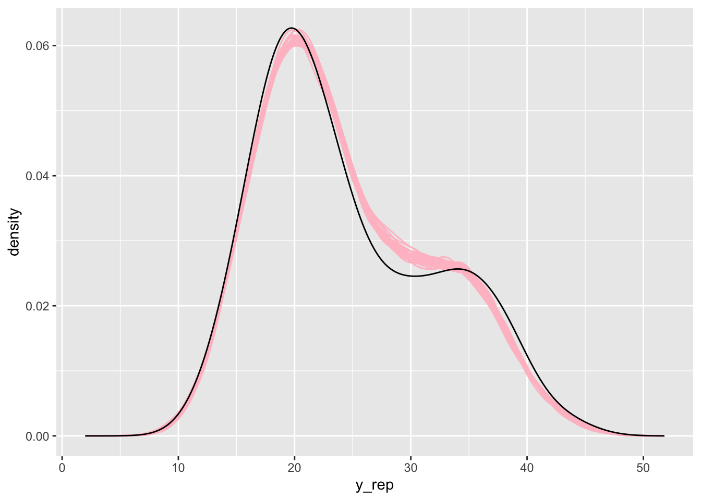

library(bayesrules)
library(tidyverse)
library(brms)
library(cmdstanr)
library(broom.mixed)
library(tidybayes)
library(ggdist)
library(patchwork)
library(ggtext)
set.seed(1994)
data(bikes, package = "bayesrules")
bikes <- bikes |>
mutate(
temp_feel_centered = scale(temp_feel, scale = FALSE),
temp_feel_c = as.numeric(temp_feel_centered)
)
temp_details <- attributes(bikes$temp_feel_centered) %>%
set_names(janitor::make_clean_names(names(.)))
theme_set(theme_minimal())Linear Regression Stan
I am going to skip some of this since I did it a bit ago.
stan_dat <- bikes |>
select(rides, temp_feel_c) |>
compose_data()
just_temp <- "
data {
int <lower=1> n;
vector[n] temp_feel_c;
vector[n] rides;
}
parameters {
real alpha;
real beta;
real <lower=0> sigma;
}
transformed parameters {
vector[n] mu;
mu = alpha + beta * temp_feel_c;
}
model {
rides ~ normal(mu, sigma);
temp_feel_c ~ normal(100, 40);
sigma ~ exponential(0.0008);
alpha ~ normal(5000, 1000);
}
generated quantities {
vector[n] y_reps;
for(i in 1:n){
y_reps[i] = normal_rng(mu[i], sigma);
}
}
"
write_stan_file(
just_temp,
"bayes-rules/linear-regression/stan-scripts/",
"simple"
)
simple_mod <- cmdstan_model(
"bayes-rules/linear-regression/stan-scripts/simple.stan"
)
fitted_model <- simple_mod$sample(
data = stan_dat,
iter_warmup = 5000,
iter_sampling = 5000
)
draws <- fitted_model$draws(format = "df")Cool lets get some posterior draws
draws |>
gather_draws(alpha, beta, sigma) |>
ggplot(aes(x = .value, fill = .variable)) +
stat_halfeye(normalize = "xy") +
facet_wrap(vars(.variable), scales = "free_x")
We can build linpred_draws by doing this
predicted_draws <- draws |>
spread_draws(mu[i], sigma) |>
mean_qi() |>
mutate(preds = rnorm(n(), mu, sigma)) |>
bind_cols(bikes)
ggplot(predicted_draws, aes(x = temp_feel, y = preds)) +
geom_point() +
geom_line(aes(y = mu)) +
geom_ribbon(aes(ymin = mu.lower, ymax = mu.upper))
Cool now lets see how good this is on the posterior prediction front.
check_draws <- draws |>
spread_draws(alpha, sigma, beta) |>
slice_sample(n = 25) |>
mutate(
id = 1:n(),
mu = map2(.x = alpha, .y = beta, .f = ~ .x + .y * bikes$temp_feel_c),
y_rep = map2(mu, sigma, ~ rnorm(500, .x, .y))
) |>
unnest(y_rep)
ggplot() +
geom_density(
data = check_draws,
aes(group = id, x = y_rep),
color = "pink",
alpha = 0.5,
linewidth = 0.25
) +
geom_density(data = bikes, aes(x = rides), color = "darkblue", size = 1)
She looks okay. We get the mean and the tails somewhat okay but we don’t really capture some of the interesting part of the data e.g. we don’t capture much or any of the bimodal parts of the data.
Tuning a model.
So we are going to check these against the stuff that Andrew is doing. We are now officially far from home.
clrs <- MetBrewer::met.brewer("Lakota", 6)
theme_set(theme_bw())
# Seed stuff
set.seed(1234)
BAYES_SEED <- 1234
data(weather_WU, package = "bayesrules")
weather_WU <- weather_WU %>%
select(location, windspeed9am, humidity9am, pressure9am, temp9am, temp3pm) |>
mutate(across(
c(temp9am, temp3pm, humidity9am, windspeed9am, pressure9am),
\(x) scale(x, scale = FALSE),
.names = "{col}_centered"
)) |>
mutate(across(
c(temp9am, temp3pm, humidity9am, windspeed9am, pressure9am),
\(x) as.numeric(scale(x, scale = FALSE)),
.names = "{col}_c"
))
extract_attributes <- function(x) {
attributes(x) %>%
set_names(janitor::make_clean_names(names(.))) %>%
as_tibble() %>%
slice(1)
}
unscaled <- weather_WU %>%
select(ends_with("_centered")) |>
summarize(across(everything(), ~ extract_attributes(.))) |>
pivot_longer(everything()) |>
unnest(value) |>
split(~name)
stan_data <- weather_WU |>
select(
temp3pm,
temp9am_c,
humidity9am_c,
windspeed9am_c,
pressure9am_c,
location
) |>
compose_data()Categorical weather
priors <- c(
prior(normal(0, 10), class = b, coef = "locationWollongong"),
prior(normal(0, 10), class = b, coef = "locationUluru"),
prior(exponential(1), class = sigma)
)
weather_location_only_prior_brms <- brm(
bf(temp3pm ~ 0 + location),
data = weather_WU,
family = gaussian(),
prior = priors,
chains = 4,
iter = 5000 * 2,
seed = BAYES_SEED,
backend = "cmdstanr",
refresh = 0
)
cat_mod <- "
data {
int <lower = 0> n;
int <lower = 1> n_location;
array[n] int location;
vector[n] temp3pm;
}
parameters {
vector[n_location] beta;
real <lower=0> sigma;
}
transformed parameters {
vector[n] mu;
for(i in 1:n){
mu[i] = beta[location[i]];
}
}
model {
temp3pm ~ normal(mu, sigma);
beta ~ normal(0, 10);
sigma ~ exponential(1);
}
generated quantities {
vector[n] y_rep;
for(i in 1:n){
y_rep[i] = normal_rng(mu[i], sigma);
}
}
"
write_stan_file(
cat_mod,
"bayes-rules/linear-regression/stan-scripts/",
"cat-mod"
)
temp_cat <- cmdstan_model(
"bayes-rules/linear-regression/stan-scripts/cat-mod.stan"
)
fit_mod <- temp_cat$sample(data = stan_data, iter_sampling = 5000 * 2)Okay lets compare the models.
weather_location_only_prior_brms |>
broom.mixed::tidy()
fit_mod$print("beta")Lets go!!! Lets replicate the actual model that Andrew uses
priors2 <- c(
prior(normal(25, 5), class = Intercept),
prior(normal(0, 10), class = b, coef = "locationWollongong"),
prior(exponential(1), class = sigma)
)
weather_location_only_prior_brms2 <- brm(
bf(temp3pm ~ location),
data = weather_WU,
family = gaussian(),
prior = priors2,
chains = 4,
iter = 5000 * 2,
seed = BAYES_SEED,
backend = "cmdstanr",
refresh = 0
)
cat_mod2 <- "
data {
int <lower = 0> n;
int <lower = 1> n_location;
array[n] int<lower=1, upper=n_location> location;
vector[n] temp3pm;
}
parameters {
real alpha;
vector[n_location -1] beta_raw;
real <lower=0> sigma;
}
transformed parameters {
vector[n_location] beta;
vector[n] mu;
beta[1] = 0; // reference level (e.g., oloroo)
for (j in 2:n_location) {
beta[j] = beta_raw[j - 1];
}
for (i in 1:n) {
mu[i] = alpha + beta[location[i]];
}
}
model {
temp3pm ~ normal(mu, sigma);
beta ~ normal(0, 10);
sigma ~ exponential(1);
}
generated quantities {
vector[n] y_rep;
for(i in 1:n){
y_rep[i] = normal_rng(mu[i], sigma);
}
}
"
write_stan_file(
cat_mod2,
"bayes-rules/linear-regression/stan-scripts/",
"cat-mod2"
)
temp_cat2 <- cmdstan_model(
"bayes-rules/linear-regression/stan-scripts/cat-mod2.stan"
)
fit_mod2 <- temp_cat2$sample(stan_data)weather_location_only_prior_brms2 |>
broom.mixed::tidy()
fit_mod2$print()These are more or less similar.
draws <- fit_mod2$draws(format = "df") |>
select(-`beta[1]`) |>
gather_draws(alpha, sigma, beta[i])
ggplot(draws, aes(x = .value, fill = .variable)) +
stat_halfeye(normalize = "xy") +
facet_wrap(vars(.variable), scales = "free_x")
cool this matches Andrew’s plot fairly well. Now lets grab the posterior predictive checks for both models.
weather_WU <- weather_WU |>
mutate(location_2 = ifelse(location == "Uluru", 0, 1))
post_draws1 <- fit_mod2$draws(format = "df") |>
select(-`beta[1]`) |>
spread_draws(alpha, beta[i], sigma) |>
slice_sample(n = 25) |>
mutate(
id = 1:n(),
mu = map2(.x = alpha, .y = beta, .f = ~ .x + .y * weather_WU$location_2),
y_rep = map2(mu, sigma, ~ rnorm(200, .x, .y))
) |>
unnest(y_rep)
ggplot(post_draws1, aes(x = y_rep)) +
geom_density(aes(group = id), color = "pink", ) +
geom_density(data = weather_WU, aes(x = temp3pm))
Cool the posterior predictive check looks about the same.
Now its time to get the predicted draws. We do need some trickery to get the predictions
pred_draws_cat <- fit_mod2$draws(format = "df") |>
spread_draws(alpha, `beta[2]`, sigma) |>
mutate(
wollong = alpha + `beta[2]` * 1,
wollong = rnorm(n(), wollong, sigma),
uluru = rnorm(n(), alpha, sigma)
) |>
pivot_longer(c(wollong, uluru), names_to = "location", values_to = "value")
ggplot(pred_draws_cat, aes(x = value, y = location, fill = location)) +
stat_halfeye()
Multiple predictors
stan_dat2 <- weather_WU |>
select(location, temp9am_c, temp3pm) |>
compose_data()
mult_var <- "
data {
int <lower = 0> n;
int <lower = 1> n_location;
array[n] int location;
vector[n] temp3pm;
vector[n] temp9am_c;
}
parameters {
vector[n_location] beta_location;
real beta_temp;
real <lower = 0> sigma;
}
transformed parameters {
vector[n] mu;
for(i in 1:n){
mu[i] = beta_location[location[i]] + beta_temp * temp9am_c[i];
}
}
model {
temp3pm ~ normal(mu, sigma);
beta_location ~ normal(0, 10);
beta_temp ~ normal(0, 2.5);
sigma ~ exponential(1);
}
generated quantities {
vector[n] y_rep;
for(i in 1:n){
y_rep[i] = normal_rng(mu[i], sigma);
}
}
"
write_stan_file(
mult_var,
"bayes-rules/linear-regression/stan-scripts/",
"mult-var"
)
mult_var_mod <- cmdstan_model(
"bayes-rules/linear-regression/stan-scripts/mult-var.stan"
)
mult_var_fit <- mult_var_mod$sample(data = stan_dat2)
priors <- c(
prior(normal(0, 2.5), class = b, coef = "temp9am_c"),
prior(normal(0, 10), class = b, coef = "locationWollongong"),
prior(normal(0, 10), class = b, coef = "locationUluru"),
prior(exponential(1), class = sigma)
)
mult_var_brms <- brm(
bf(temp3pm ~ 0 + location + temp9am_c),
data = weather_WU,
family = gaussian(),
prior = priors,
chains = 4,
iter = 5000 * 2,
seed = BAYES_SEED,
backend = "cmdstanr",
refresh = 0
)Cool lets make sure we get the same output
mult_var_fit$print()
broom.mixed::tidy(
mult_var_brms
)These are fairly similar.
drws_df <- mult_var_fit$draws(format = "df") |>
rename(Uluru = `beta_location[1]`, Woolong = `beta_location[2]`) |>
gather_draws(Uluru, Woolong, sigma, beta_temp)
ggplot(drws_df, aes(x = .value, fill = .variable)) +
stat_halfeye(normalize = "xy") +
facet_wrap(vars(.variable), scales = "free_x")
Cool this is the plot we get from the cmdstan
mult_var_brms |>
gather_draws(b_locationUluru, b_locationWollongong, b_temp9am_c, sigma) |>
ggplot(aes(x = .value, fill = .variable)) +
stat_halfeye(normalize = "xy") +
facet_wrap(vars(.variable), scales = "free_x")
These are more or less the same now lets recreate some of the other plots. Lets look at the posterior.
weather_WU <- weather_WU |>
mutate(location_2 = ifelse(location == "Uluru", 1, 2))
post_draws2 <- mult_var_fit$draws(format = "df") |>
spread_draws(mu[i], sigma, beta_temp) |>
slice_sample(n = 25) |>
mutate(
id = 1:n(),
y_rep = map2(mu, sigma, ~ rnorm(200, .x, .y))
) |>
unnest(y_rep)
ggplot(post_draws2, aes(x = y_rep)) +
geom_density(aes(group = id), color = "pink") +
geom_density(data = weather_WU, aes(x = temp3pm))
Alright now!
Interaction time
int_model <- "
data {
int <lower = 0> n;
int <lower =1> n_location;
array[n] int location;
vector[n] temp3pm;
vector[n] temp9am_c;
}
parameters {
real <lower=0> sigma;
vector[n_location] beta_location;
vector [n_location] beta_temp;
}
transformed parameters {
vector[n] mu;
mu = beta_location[location] + beta_temp[location] .* temp9am_c;
}
model {
temp3pm ~ normal(mu, sigma);
beta_location ~ normal(0, 10);
beta_temp ~ normal(0, 2.5);
sigma ~ exponential(1);
}
generated quantities {
vector[n] y_rep;
for(i in 1:n){
y_rep[i] = normal_rng(mu[i], sigma);
}
}"
write_stan_file(
int_model,
"bayes-rules/linear-regression/stan-scripts/",
"int-model"
)
int_mod <- cmdstan_model(
"bayes-rules/linear-regression/stan-scripts/int-model.stan"
)
fitted_int_mod <- int_mod$sample(data = stan_dat2)Now lets compare it to an equivelent brooms model.
priors <- c(
prior(normal(0, 2.5), class = b, nlpar = a), # temp prior
prior(normal(0, 10), class = b, nlpar = b), # location prior
prior(exponential(1), class = sigma)
)
int_model_brms <- brm(
bf(
temp3pm ~ 0 + a + b * temp9am_c,
a ~ 0 + location,
b ~ 0 + location,
nl = TRUE
),
prior = priors,
data = weather_WU
)We should get roughly the same answer
broom.mixed::tidy(int_model_brms)
fitted_int_mod$print()Going crazy
Since we need some practice doing no intercepts and intercepts lets go ahead and do both
full_mod_no_intercepts <- "
data{
int <lower=0> n;
int <lower=1> n_location;
array[n] int location;
vector[n] temp3pm;
vector[n] temp9am_c;
vector[n] humidity9am_c;
vector[n] pressure9am_c;
vector[n] windspeed9am_c;
}
parameters {
real <lower=0> sigma;
vector[n_location] beta_location;
real beta_temp;
real beta_humidity;
real beta_pressure;
real beta_wind;
}
transformed parameters {
vector[n] mu;
for(i in 1:n){
mu[i] = beta_location[location[i]] + beta_temp * temp9am_c[i] + beta_humidity * humidity9am_c[i] + beta_pressure * pressure9am_c[i]+ beta_wind * windspeed9am_c[i];
}
}
model {
temp3pm ~ normal(mu, sigma);
beta_location ~ normal(0, 10);
[beta_temp, beta_humidity, beta_pressure, beta_wind] ~ normal(0, 2.5);
sigma ~ exponential(1);
}
generated quantities {
vector[n] yrep;
for(i in 1:n){
yrep[i] = normal_rng(mu[i], sigma);
}
}
"
write_stan_file(
full_mod_no_intercepts,
dir = "bayes-rules/linear-regression/stan-scripts/",
basename = "full-mod"
)
full_mod <- cmdstan_model(
"bayes-rules/linear-regression/stan-scripts/full-mod.stan"
)
fitted_full_mod <- full_mod$sample(stan_data)
priors <- c(
prior(normal(0, 10), class = b, coef = "locationWollongong"),
prior(normal(0, 10), class = b, coef = "locationUluru"),
prior(normal(0, 2.5), class = b),
prior(exponential(1), class = sigma)
)
weather_full_brms <- brm(
bf(
temp3pm ~
0 + temp9am_c + humidity9am_c + windspeed9am_c + pressure9am_c + location
),
data = weather_WU,
family = gaussian(),
prior = priors,
chains = 4,
iter = 5000 * 2,
seed = BAYES_SEED,
backend = "cmdstanr",
refresh = 0
)Now lets compare
tidy_full_mod <- broom.mixed::tidy(
weather_full_brms
) |>
select(term, estimate) |>
mutate(
term = str_remove(term, "_c|location"),
term = case_match(
term,
"temp9am" ~ "temp",
"humidity9am" ~ "humdity",
"windspeed9am" ~ "wind",
"pressure9am" ~ "pressure",
"Wollongong" ~ "Wollongon",
"Uluru" ~ "Uluru"
)
) |>
slice(-7) |>
arrange(term) |>
select(brms = estimate)
cmdstan <- fitted_full_mod$draws(format = "df") |>
rename(Uluru = `beta_location[1]`, Wollongong = `beta_location[2]`) |>
select(Uluru:beta_wind) |>
summarise_draws() |>
mutate(term = str_remove(variable, "beta_")) |>
select(term, Cmdstan = mean) |>
arrange(term) |>
bind_cols(tidy_full_mod)
library(tinytable)
tt(cmdstan)Cool our models are like as close to similar as we could want them.